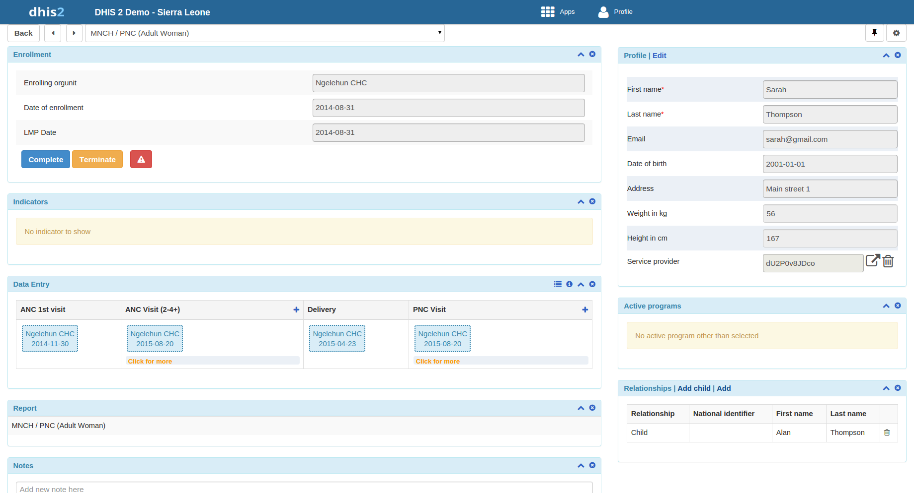

|  |
You manage a TEI from the TEI's dashboard in the Tracker Capture app.
The dashboard consist of widgets. Drag and drop the widgets to place them in the order and in the position you want.
Click the pin icon to stick the right column of widgets to a fix position. This is useful especially during data entry.
Example 26.1.
If you have many data elements or big form to fill in, stick the right widget column. Then all the widgets you've placed in the right column remain visible while you scroll in the data entry part.
Any indicator defined for the program you've selected will have its value calculated and displayed in the Indicators widget.
Navigation:
Back: takes you back to the search and registration page
Previous and next buttons: takes you to the previous or next TEI dashboard in the TEI search results list
Other programs field: if the TEI is enrolled in other programs, they're listed here. Click a program to change the program for which you enter data for the selected TEI. When you change programs, the content in the widgets change too.